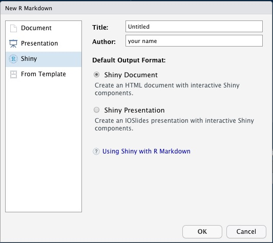

library(palmerpenguins)
head(penguins) Building interactive web apps
with the R package shiny

What we’ll discuss
- The
shinyframework - The user interface (UI)
- The server
- Advanced topics
- Take-aways
Case study

The palmer penguins penguins dataset ( ).
).
Case study
| species | island | bill_length_mm | bill_depth_mm | flipper_length_mm | body_mass_g | sex | year |
|---|---|---|---|---|---|---|---|
| Adelie | Torgersen | 39.1 | 18.7 | 181 | 3750 | male | 2007 |
| Adelie | Torgersen | 39.5 | 17.4 | 186 | 3800 | female | 2007 |
| Adelie | Torgersen | 40.3 | 18.0 | 195 | 3250 | female | 2007 |
| Adelie | Torgersen | NA | NA | NA | NA | NA | 2007 |
| Adelie | Torgersen | 36.7 | 19.3 | 193 | 3450 | female | 2007 |
| Adelie | Torgersen | 39.3 | 20.6 | 190 | 3650 | male | 2007 |
Case study

Our goal
Slides available from hanneoberman.github.io/presentations
The shiny framework
The basics
What is shiny?
- An
Rpackage for buildingshinyapps.
What is a shiny app?
- A fully interactive (web) application, which can be:
- build as a dashboard;
- hosted online on a webpage;
- included in
RMarkdown documents.
The aim
Why use shiny?
To create apps!
Make your
Rworkflows:- interactive (point-and-click style);
- reproducible for non-coders;
- look instantly professional.
The package
What does shiny offer?
- A collection of wrapper functions to write “app languages”:
- geared toward
Rusers who have zero experience with web development; - no knowledge of
HTML/CSS/JavaScriptrequired; - but you can extend it with
CSSthemes,HTMLwidgets, andJavaScriptactions.
- geared toward
- Developed by Posit, so documentation and support are more or less guaranteed.
The template app
How to build a shiny app?
A. Create a file called app.R and add shiny components*
B. In RStudio: File → New file → R Markdown → Shiny
*file name and components are non-negotiable!

The template app
The components
What does a shiny app consist of?
- A user interface (UI):
- the visible, interactive part;
- e.g., a web app or dashboard.
- A server:
- the invisible, processing part;
- e.g., your own computer or shinyapps.io.
library(shiny)
ui <- # some code to generate the UI
server <- # some code to generate the server
shinyApp(ui = ui, server = server)Starting point
library(shiny)
ui <- # some code to generate the UI
server <- # some code to generate the server
shinyApp(ui = ui, server = server)An empty app
library(shiny)
ui <- fluidPage()
server <- function(input, output) {}
shinyApp(ui = ui, server = server)Our app
Tips
Don’t rush into coding when you should be thinking.
Before building a shiny app, think about:
- What is the app aimed at?
- Who are the end users of your app? Are they tech-literate?
- In what context will the app be used? On what machines (e.g., because of screen size)?
Tips
While building a shiny app:
- KISS: Keep It Simple, Stupid;
- Use a design/UI first approach;
- Build the front-end and the back-end separately;
- If you copy something just once, make it a function;
- Avoid unnecessary complexity and ‘feature creep’.
Tips
After building a shiny app:
- Share the app;
- Make it last.
See Advanced topics.
Recap
- Which two components does a
shinyapp require? - What part of the app can be thought of as the ‘front-end’?
- Do the computations need to be performed locally?
The UI
Starting point
library(shiny)
ui <- # some code to generate the UI
server <- # some code to generate the server
shinyApp(ui = ui, server = server)Filling in the UI
ui <- fluidPage()The shiny function fluidPage()
- generates an ‘empty canvas’ for
shinyapps; - en-captures all other UI elements.
Adding some text
To show text in our app, we can just add character/string objects inside fluidPage():
ui <- fluidPage(
"Palmer Penguins",
"An interactive visualization"
)Our app
Adding formatted text
For formatted text, shiny has many functions that are wrappers around HTML tags. For example:
h1(): top-level header;h2(): secondary header;strong(): bold text;em(): italicized text;br(): line break;img(): image;a(): hyperlink, etc.
Note. If you already know HTML, you don’t need to use these wrapper functions!
Adding formatted text
Let’s replace the UI part of our code with the following:
ui <- fluidPage(
h1("Palmer penguins"),
"An",
em("interactive"),
br(),
strong("visualization")
)Our app
Adding a title
ui <- fluidPage(
titlePanel("Palmer penguins: An interactive visualization")
)The shiny function titlePanel()
- adds a visible big title-like text to the top of the page;
- sets the “official” title of the web page (i.e., displayed at the name of the tab in the browser).
Our app
Adding a layout
The simple sidebar layout:
- provides a two-column layout;
- with a smaller sidebar and a larger main panel;
- visually separates the input and output of the app.
ui <- fluidPage(
titlePanel("Palmer penguins: An interactive visualization"),
sidebarLayout(
sidebarPanel("[inputs]"),
mainPanel("[outputs]")
)
)Our app
Adding an input element
Inputs allow users to interact with a shiny app.
We’ve seen two types already:
selectInput()creates a drop-down menu;sliderInput()creates a numeric scale.
Adding an input element
Can you guess what kind of element these input functions will create?
textInput();dateInput();checkboxInput().
Adding input elements

Adding an input element
Which function would suit an input element for the variable island?
checkboxGroupInput("location", "Location",
choices = c("Biscoe", "Dream","Torgersen"),
selected = c("Biscoe", "Dream","Torgersen"))Adding an input element
All input functions have the same first two arguments:
inputId, the name by whichshinywill refer to this input when you want to retrieve its current value;label, which specifies the text displayed right above the input element.
These argument names are typically dropped from the ...Input() function call:
checkboxGroupInput("location", "Location", choices = c("Biscoe", "Dream", "Torgersen"))
Note. Every input in your app must have a unique
inputId; the app will not work properly otherwise! So keep your inputIds simple and sensible.
Adding an input element
The resulting UI code looks like:
ui <- fluidPage(
titlePanel("Palmer penguins: An interactive visualization"),
sidebarLayout(
sidebarPanel(
checkboxGroupInput("location", "Location",
choices = c("Biscoe", "Dream", "Torgersen"))
),
mainPanel("[outputs]")
)
)Our app
Adding another input element
Let’s create an input element for the variable body_mass_g as well. Which input function(s) should we use?
sliderInput("weight", "Weight",
min = 2, max = 7, value = c(3, 5), post = "kg")Adding another input element
The full UI code is now:
ui <- fluidPage(
titlePanel("Palmer penguins: An interactive visualization"),
sidebarLayout(
sidebarPanel(
checkboxGroupInput("location", "Location",
choices = c("Biscoe", "Dream", "Torgersen")),
sliderInput("weight", "Weight",
min = 2, max = 7, value = c(3, 5), post = "kg")
),
mainPanel("[outputs]")
)
)Our app
Adding an output element
Outputs are shown in the UI, but created on the server side.
That’s why we add placeholders for the outputs in the UI.
Placeholders:
- Determine where an output will be;
- Give outputs a unique ID to link it to the server;
- Won’t actually show anything, yet.
mainPanel(
"[plot placeholder]", plotOutput("scatterplot")
)Our app
Adding another output element
The placeholder doesn’t show anything, because we haven’t created any figure yet on the server side.
But first, let’s add another output element:
mainPanel(
"[plot placeholder]", plotOutput("scatterplot"),
br(),
br(),
"[table placeholder]", tableOutput("descriptives")
)
Note. We added a few line breaks
br() between the two outputs, so that they aren’t crammed on top of each other.
The complete UI
ui <- fluidPage(
titlePanel("Palmer penguins: An interactive visualization"),
sidebarLayout(
sidebarPanel(
checkboxGroupInput("location", "Location",
choices = c("Biscoe", "Dream","Torgersen"), selected = c("Biscoe", "Dream","Torgersen")),
sliderInput("weight", "Weight",
min = 2, max = 7, value = c(3, 5), post = "kg")
),
mainPanel(
"[plot placeholder]", plotOutput("scatterplot"),
br(),
br(),
"[table placeholder]", tableOutput("descriptives")
)
)
)Our app
Tips
When building the front-end of your app:
- Work on the general appearance first, anything that does not rely on computation (e.g., tabs, inputs, outputs);
- Use mock data and/or text (build an ‘ipsum-app’);
- Make the app self-evident; the main usage of the app should not require reading any manual.
Recap
- How can formatted text be shown in a
shinyapp? - What is mandatory and unique in input element functions?
- How do you define where an output element will be shown?
The server
Starting point
library(shiny)
ui <- # some code to generate the UI
server <- # some code to generate the server
shinyApp(ui = ui, server = server)The server function
server <- function(input, output) {}The server function:
- requires* input and output IDs from the UI;
- builds output objects via
render...()functions; - saves the generated output into an output list.
*exceptions apply!
Building static output
Let’s use the exception to the rule to develop our server step-by-step.
ggplot(penguins,
aes(x = flipper_length_mm, y = bill_length_mm, color = species)) +
geom_point() +
geom_smooth(method = "lm", se = FALSE) +
scale_color_palmer() +
labs(title = "Flipper and bill length by species (static)")Building static output
Building static output
server <- function(input, output) {
output$scatterplot <- renderPlot({
ggplot(penguins,
aes(x = flipper_length_mm, y = bill_length_mm, color = species)) +
geom_point() +
geom_smooth(method = "lm", se = FALSE) +
scale_color_palmer() +
labs(title = "Flipper and bill length by species (static)")
})
}Our app
Building interactive output
To make the figure interactive, we have to link the server to the UI inputs.
server <- function(input, output) {
output$scatterplot <- renderPlot({
ggplot(penguins,
aes(x = flipper_length_mm, y = bill_length_mm, color = species)) +
geom_point() +
geom_smooth(method = "lm", se = FALSE) +
scale_color_palmer() +
labs(title = paste("Flipper and bill length at", input$location))
})
}Whenever the selected location changes, the plot title will update.
Our app
Building an interactive visualization
To incorporate interactivity in the visualization, we have to filter the data based on the input values.
server <- function(input, output) {
output$scatterplot <- renderPlot({
filtered <- penguins |>
filter(island %in% input$location,
body_mass_g >= input$weight[1] * 1000,
body_mass_g <= input$weight[2] * 1000
)
filtered |>
ggplot(aes(x = flipper_length_mm, y = bill_length_mm, color = species)) +
geom_point() +
geom_smooth(method = "lm", se = FALSE) +
scale_color_palmer() +
labs(title = "Flipper and bill length")
})
}Our app
Building an interactive summary table
To complete our app we need to build an interactive output for the table placeholder and add it to the server:
output$descriptives <- renderTable({
filtered <- penguins |>
filter(island %in% input$location,
body_mass_g >= input$weight[1] * 1000,
body_mass_g <= input$weight[2] * 1000
)
filtered |>
group_by(species) |>
summarise(mean_bill = mean(bill_length_mm, na.rm = TRUE),
mean_flip = mean(flipper_length_mm, na.rm = TRUE))
})Our app
Intermezzo
Reactivity
Short break from our app to talk about a crucial concept in shiny: reactivity.
Reactivity enables your outputs to react to changes in inputs.
On the most basic level, it means that when the value of a variable x changes, anything that relies on x (i.e. has x in it) gets re-evaluated.
Consider the following code
x <- 5
y <- x + 1
x <- 10What is the value of y?
Reactivity
What is the value of y?
x <- 5
y <- x + 1
x <- 10In ordinary programming, the value of y is still 6.
In reactive programming, however, x and y are reactive expressions. Now, the value of y updates reactively, and becomes 11.
Reactivity is the foundation for the responsiveness of shiny apps.
Reactivity
In our server, we implicitly use reactivity when we filter the data for our outputs:
filtered <- penguins |>
filter(island %in% input$location,
body_mass_g >= input$weight[1] * 1000,
body_mass_g <= input$weight[2] * 1000
)
)Whenever one of the inputs changes, our outputs change with it. But, this part of code is duplicated, because we didn’t use a reactive variable.
Reactivity
We can avoid code duplication by:
- defining a reactive variable that will hold the filtered dataset;
- using that variable in the
render...()functions.
filtered <- reactive({
penguins |>
filter(island %in% input$location,
body_mass_g >= input$weight[1] * 1000,
body_mass_g <= input$weight[2] * 1000
)
})Reactivity
What is going on behind the scenes?
- The location input changes →
shiny‘looks’ at the reactive(s) that depend on location →filtered()is re-evaluated →shiny‘looks’ at the reactive(s) that depend onfiltered()→- The two
render...()functions are re-executed → - The plot and the table output are updated.
This can be visualized in a dependency tree, to show what value depends on what other value.
Reactivity

The server (continued)
The final app
server <- function(input, output) {
filtered <- reactive({
penguins |>
filter(island %in% input$location,
body_mass_g >= input$weight[1] * 1000,
body_mass_g <= input$weight[2] * 1000
)
})
output$scatterplot <- renderPlot({
filtered() |>
ggplot(aes(x = flipper_length_mm, y = bill_length_mm, color = species)) +
geom_point() +
geom_smooth(method = "lm", se = FALSE) +
scale_color_palmer() +
labs(title = "Flipper and bill length")
})
output$descriptives <- renderTable({
filtered() |>
group_by(species) |>
summarise(mean_bill = mean(bill_length_mm, na.rm = TRUE),
mean_flip = mean(flipper_length_mm, na.rm = TRUE))
})
}Our app
Tips
When building the back-end of your app:
- Use sensible non-reactive defaults while developing (e.g.,
data <- mtcarsinstead ofdata <- reactive(...).); - Think about what could to be ‘hard coded’ in the final app too, because of the reactivity vs. speed trade-off;
- Extract the complex (but non-reactive) processing functions and put them in separate files;
- Add user feedback to make server-side requirements explicit (e.g., input validation, pop-up messages, loading icons).
Recap
- What is the common naming element in the set of
shinyoutput functions? - How can you make the server side more efficient and easier to debug?
- How are the UI and server sides linked?
Advanced topics
Design
- Use more complex layouts, such as tabs or dashboards;
- Make the output elements ‘clickable’ with
plotlyandDT; - Change input element options from the server side with
update...()functions.
Interactive output elements
# Interactive plots with {plotly}
...
plotlyOutput("scatterplot")
...
output$scatterplot <- renderPlotly({...})
...
# Interactive tables with {DT}
...
dataTableOutput("descriptives")
...
output$descriptives <- DT::renderDT({...})
...Extended app
Robustness
- Run the app in the viewer panel, a separate window, and your browser;
- Monkey test it (i.e., click EVERYTHING);
- Provide the wrong inputs (e.g., a corrupt data file, a file with the ‘wrong’ extension, an ‘impossible’ numeric input, etc.);
- Modularize your app;
- Use the
golemframework for production-gradeshinyapps (but decide up-front!).
Separating tabs
...
tabsetPanel(
tabPanel("Plot", plotOutput("scatterplot")),
tabPanel("Table", tableOutput("descriptives"))
)
...Extended app
Deployment
Deploy your app on shinyapps.io:
- You’ll have a link to use/share the app online;
- Non-
R-users will be able to interact with your app; - You can tweak your app to cache certain outputs, or have several users in one session (like Google Drive documents);
- But, with a free account, your app will be public;
- And if your app is too popular, you will eventually need to pay server costs.
Note. You could also host your app on your own website. Or don’t deploy it at all (e.g., for privacy reasons).
Take-aways
Summary
shinyallows you to build interactive (web) apps fromR;shinyapps consist of two parts, the user interface (UI) and the server:- In the UI, you design what is shown to the user,
- In the server, you do all the modeling and building of the outputs,
- You link the UI and the server to make the app interactive,
- To optimize these interactions, you can use reactive expressions;
- This is only the tip of the iceberg, there are many more things you can do with
shiny.
Inspiration
Check out these amazing resources:
- RStudio’s introduction to shiny webinar;
- Hadley Wickham’s book Mastering Shiny;
- The official cheatsheet;
- The more advanced Engineering Shiny;
- This webinar on Modularizing Shiny.
And look for examples here:
- The Shiny Gallery;
- The annual
shinycontest.